Nigamaa Nayakanti*、Rami Al-Rfou*、Aurick Zhou、Kratarth Goel、Khaled S. Refaat、Benjamin Sapp
Waymo（nigamaa@waymo.com、rmyeid@waymo.com、aurickz@waymo.com、kratarth@waymo.com、krefaat@waymo.com、bensapp@waymo.com）
arXiv:2207.05844v1 [cs.CV]、2022年7月12日
翻訳について：原文 PDF は
14_Wayformer_2207.05844.pdf（全 20 ページ）。本文、図の説明、図中ラベル、表、脚注、付録を訳出し、論文タイトルと参考文献は原文のまま掲載。図は原図を掲載し、英語ラベルの日本語訳を併記した。数式・数値・引用番号・コードの識別子は原文を維持。原文の記述に関する補足は「訳注」と明示し、本文と区別している。
脚注*：貢献度は同等。
自動運転のための動き予測（motion forecasting）は困難なタスクである。複雑な走行シナリオは、静的入力と動的入力の不均質な混合をもたらすからである。道路形状、車線の接続関係、時間変化する信号機の状態、そして動的に変化するエージェント集合の履歴とそれらの相互作用に関する情報を、どのように表現し融合すれば効果的な符号化が得られるかは、未解決の問題である。この多様な入力特徴をモデル化するために、多くの手法は、モダリティ固有の多様なモジュールを備えた、同様に複雑なシステムを設計することを提案してきた。その結果、スケールさせること、拡張すること、あるいは品質と効率のトレードオフを厳密に調整することが難しいシステムになっている。
本論文では、動き予測のための、単純かつ均質な注意機構ベースのアーキテクチャ群である Wayformer を提案する。Wayformer は、注意機構ベースのシーンエンコーダとデコーダからなる簡潔なモデル記述を提供する。シーンエンコーダにおいては、入力モダリティの早期融合（early fusion）、後期融合（late fusion）、階層的融合（hierarchical fusion）の選択を検討する。各融合方式について、因子分解注意（factorized attention）または潜在クエリ注意（latent query attention）によって効率と品質をトレードオフする戦略を探る。早期融合は、構成が単純であるにもかかわらず、モダリティに依存しないだけでなく、Waymo Open Motion Dataset（WOMD）と Argoverse の両リーダーボードで最先端の結果を達成することを示し、我々の設計思想の有効性を実証する。
キーワード：動き予測、軌道予測、自動運転、Transformer、ロボティクス、学習
本研究では、実世界の走行環境におけるエージェント（歩行者、車両、自転車）の将来行動予測という一般的なタスクに焦点を当てる。これは安全で快適な人間とロボットの相互作用に不可欠なタスクであり、自動運転のような影響の大きいロボティクス応用を可能にする。
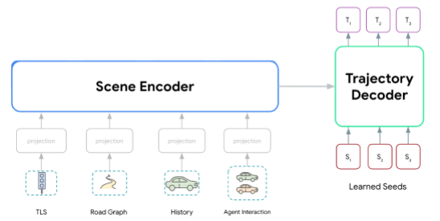
図1：エンコーダ／デコーダの Transformer ネットワークの組としての Wayformer アーキテクチャ。このモデルはマルチモーダルなシーンデータを入力として受け取り、軌道のマルチモーダルな分布を出力する。
図中ラベル：Scene Encoder＝シーンエンコーダ、Trajectory Decoder＝軌道デコーダ、projection＝射影、TLS＝信号機状態、Road Graph＝道路グラフ、History＝履歴、Agent Interaction＝エージェント相互作用、Learned Seeds＝学習されたシード
このようなシーン理解に必要なモデル化は、多くの理由で困難である。第一に、出力が非常に非構造的かつマルチモーダルである。たとえば、車両を運転する人は、観測者には未知の多数の潜在的な意図のうちの 1 つを実行しうるため、多様で互いに排他的な起こりうる未来にわたる分布を表現する必要がある。第二の課題は、入力がエージェントの過去の物理的状態、静的な道路情報（たとえば車線の位置とその接続関係）、時間変化する信号機情報など、モダリティの不均質な混合からなることである。
これまでの多くの研究は、マルチモーダルな出力をどのようにモデル化するかに取り組み［1, 2, 3, 4, 5, 6］、また異なる入力タイプを融合するための人手で設計したアーキテクチャを開発してきたが、それらはそれぞれ独自の前処理（たとえば画像のラスタ化［7, 2, 8］）を必要とする。ここでは、入力空間のマルチモダリティに焦点を当て、複雑で不均質なアーキテクチャを避け、より単純なアーキテクチャのパラメータ化につながる、単純でありながら効果的なモダリティ非依存のフレームワークを開発する。このようにアーキテクチャ群を簡潔に記述することで設計空間が単純になり、モデルの計算量と容量を調整することによって、モデルの品質とレイテンシのトレードオフをより直接的かつ効果的に制御できるようになる。
品質や効率を犠牲にすることなく複雑さを抑えるには、時間次元と空間次元に同時に存在するマルチモーダルな特徴を扱える、汎用的なモデル化のプリミティブを見つける必要がある。最近、いくつかの手法が、動き予測問題のためのネットワークとして Transformer ネットワークを提案している［9, 10, 11, 12, 13］。これらの手法は単純化されたモデルアーキテクチャを提供するが、依然としてドメインの専門知識と、モダリティ固有の過度な調整を必要とする。［14］は、一度に 1 つのモダリティを逐次的に処理するクロス注意層の積み重ねを提案した。各モダリティを処理する順序は設計者に委ねられており、すべての可能性を列挙するのは組合せ的に不可能である。［3］は、モダリティごとに別々のエンコーダを使用することを提案した。そこでは、ネットワークの種類とその容量をモダリティごとに調整できる。その後、各モダリティの埋め込みは平坦化され、1 本のベクトルとして予測器に入力される。これらの手法は多くの自由度を許すが、探索空間を大幅に増大させる。効率的なネットワークアーキテクチャ探索や、多大な人手による入力と手作業の設計がなければ、モデル化の選択肢のごく一部しか探索されないため、選ばれたモデルは最適でない可能性が高い。
我々の実験は、動き予測の領域がオッカムの剃刀に従うことを示唆している。我々は、最も単純な設計上の選択と最小限のドメイン固有の仮定によって最先端の結果を示す。これは従来研究とは際立って対照的である。シミュレーションおよび実際の自動運転車（AV）でテストしたところ、これらの Wayformer モデルはシーンを良好に理解していることを示した。
我々の貢献は次のようにまとめられる。
走行シナリオは、道路情報、信号機の状態、エージェントの履歴、エージェント間の相互作用など、マルチモーダルなデータからなる。本節では、我々の設定におけるこれらのモダリティの表現を詳述する。読みやすさのため、次の記号を定義する。\(A\) はモデル化する自エージェント（ego-agent）の数、\(T\) は履歴において考慮する過去および現在の時間ステップ数を表し、特徴量のサイズは \(D_m\) である。モダリティ \(m\) については、モデル化する各エージェントに対する「文脈オブジェクトの集合」（すなわち他の道路利用者の表現）を表す第 4 の次元（\(S_m\)）を持つ場合がある。
エージェント履歴 は、過去のエージェント状態の系列と現在の状態を含む \([A, T, 1, D_h]\)。各時間ステップ \(t \in T\) について、エージェントの状態を定める特徴量、たとえば x、y、速度、加速度、バウンディングボックスなどを考慮する。均質性のため、文脈次元 \(S_h = 1\) を含める。
エージェント相互作用 相互作用テンソル \([A, T, S_i, D_i]\) はエージェント間の関係を表す。モデル化する各エージェント \(a \in A\) について、その周囲で最も近い一定数の文脈エージェント \(c_i \in S_i\) を考慮する。これらの文脈エージェントは、モデル化するエージェントの行動に影響を与えるエージェントを表す。\(D_i\) の特徴量は、各文脈エージェントの物理的状態（上記の \(D_h\) と同様）を表すが、自エージェントの座標系に変換されている。
道路グラフ 道路グラフ \([A, 1, S_r, D_r]\) はエージェント周辺の道路特徴を含む。［2］に従い、道路グラフのセグメントをポリラインとして表現する。すなわち、端点で指定され種別情報が付与された線分の集まりで道路形状を近似する。モデル化するエージェントに最も近い \(S_r\) 個の道路グラフセグメントを使用する。道路特徴には時間次元がないが、他のモダリティとの均質性のため、大きさ 1 の時間次元を含める。
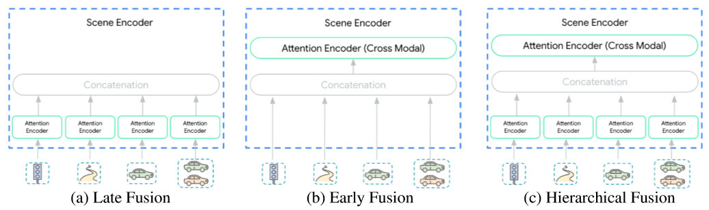
図2：異なる段階でマルチモーダル入力を融合する Wayformer のシーンエンコーダ。後期融合はモダリティごとに注意エンコーダを専用に割り当てるのに対し、早期融合はすべての入力を 1 つのクロスモーダルエンコーダ内で処理する。最後に、階層的融合は両方の手法を組み合わせる。
図中ラベル：Scene Encoder＝シーンエンコーダ、Attention Encoder＝注意エンコーダ、Attention Encoder (Cross Modal)＝注意エンコーダ（クロスモーダル）、Concatenation＝連結、(a) Late Fusion＝後期融合、(b) Early Fusion＝早期融合、(c) Hierarchical Fusion＝階層的融合
信号機状態 各エージェント \(a \in A\) について、信号機情報 \([A, T, S_{tls}, D_{tls}]\) は、そのエージェントに最も近い信号機の状態を含む。各信号機点 \(tls \in S_{tls}\) は、信号の位置と信頼度を記述する特徴量 \(D_{tls}\) を持つ。
Wayformer モデル群は、シーンエンコーダとデコーダという 2 つの主要な構成要素からなるように設計する。シーンエンコーダは主として、走行シーンを要約する 1 つ以上の注意エンコーダで構成される。デコーダは 1 つ以上の標準的な Transformer のクロス注意ブロックの積み重ねであり、学習された初期クエリが入力され、シーン符号化とのクロス注意を経て軌道を生成する。図1 は、マルチモーダル入力を処理してシーン符号化を生成する Wayformer モデルを示している。このシーン符号化は、出力空間のマルチモダリティをカバーする \(k\) 個の起こりうる軌道をデコーダが生成するための文脈として機能する。
座標系 我々のモデルは単一エージェントの未来を生成するように学習されるため、現在の時間ステップにおける自エージェントの位置と向きを中心にシーンの空間的特徴を平行移動・回転させることで、シーンを自己中心座標系に変換する。
射影層 異なる入力モダリティは同じ数の特徴量を共有するとは限らないため、すべてのモダリティを時間次元と空間次元 \([S, T]\) に沿って連結する前に、共通の次元 \(D\) に射影する。単純な変換 \(\mathrm{Projection}(x_i) = \mathrm{relu}(\mathbf{W} x_i + b)\)（ただし \(x_i \in \mathbb{R}^{D_m}\)、\(b \in \mathbb{R}^{D}\)、\(\mathbf{W} \in \mathbb{R}^{D \times D_m}\)）で十分であることがわかった。具体的には、形状 \([A, T, S_m, D_m]\) の入力が与えられたとき、その最後の次元を射影して大きさ \([A, T, S_m, D]\) のテンソルを生成する。
位置埋め込み 自己注意は本来的に置換同変であるため、系列エンコーダではなく集合エンコーダとみなすことができる。しかし、データが特定の順序に従うモダリティ、たとえば異なる時間ステップにわたるエージェント状態については、置換同変性を破って系列情報を利用することが有益である。これは一般に位置埋め込みによって行われる。単純さのため、すべてのモダリティに学習可能な位置埋め込みを加える。すべてのモダリティが順序を持つわけではないので、学習可能な位置埋め込みは最初はゼロに設定し、モダリティ内の順序を利用する必要があるかどうかをモデルに学習させる。
異なるモダリティに射影と位置埋め込みを適用したら、シーンエンコーダはすべてのモダリティの情報を組み合わせて環境の表現を生成する。具体的には、シーン表現 \(\boldsymbol{Z} = \mathit{Encoder}(\{m_0, m_1, \ldots, m_k\})\) を学習することを目指す。ここで \(m_i \in \mathbb{R}^{A \times (T \times S_m) \times D}\)、\(\boldsymbol{Z} \in \mathbb{R}^{A \times L \times D}\) であり、\(L\) はハイパーパラメータである。
しかし、入力ソースの多様性により、この統合は自明ではないタスクとなる。モダリティは同じ抽象度やスケールで表現されているとは限らない：{ピクセル vs オブジェクト}。したがって、一部のモダリティは他より多くの計算を必要とする可能性がある。計算量とパラメータ数をモダリティ間でどう配分するかはアプリケーション固有であり、人手で設計するのは容易でない。我々は、{後期、早期、階層的} という 3 つの融合レベルを提案することで、このプロセスの単純化を試みる。
後期融合 これは動き予測モデルで最も一般的に用いられる手法であり、各モダリティが専用のエンコーダを持つ（図2 を参照）。出力に追加の射影層を導入しないよう、これらのエンコーダの幅は等しく設定する。さらに、探索空間を扱いやすい範囲に絞り込むため、すべてのエンコーダで同じ深さを共有する。モダリティ間の情報伝達は、軌道デコーダのクロス注意層でのみ許される。
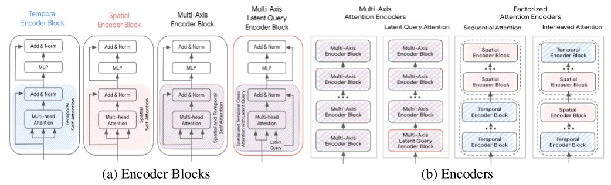
図3：Wayformer で検討したエンコーダアーキテクチャのまとめ。(a) はさまざまなエンコーダブロックの概要を示し、(b) はこれらのブロックがどのように配置されてエンコーダを構成するかを説明する。
図中ラベル：Temporal Encoder Block＝時間エンコーダブロック、Spatial Encoder Block＝空間エンコーダブロック、Multi-Axis Encoder Block＝多軸エンコーダブロック、Multi-Axis Latent Query Encoder Block＝多軸潜在クエリエンコーダブロック、Add & Norm＝加算と正規化、Multi-head Attention＝マルチヘッド注意、Temporal Self Attention＝時間方向の自己注意、Spatial Self Attention＝空間方向の自己注意、Spatial and Temporal Self Attention＝空間・時間方向の自己注意、Spatial and Temporal Cross Attention with Latent Query＝潜在クエリによる空間・時間方向のクロス注意、Latent Query＝潜在クエリ、Multi-Axis Attention Encoders＝多軸注意エンコーダ、Latent Query Attention＝潜在クエリ注意、Factorized Attention Encoders＝因子分解注意エンコーダ、Sequential Attention＝逐次注意、Interleaved Attention＝交互注意、(a) Encoder Blocks＝エンコーダブロック、(b) Encoders＝エンコーダ
早期融合 早期融合は、各モダリティに自己注意エンコーダを専用に割り当てる代わりに、モダリティ固有のパラメータを射影層のみに削減する（図2 を参照）。このパラダイムでは、シーンエンコーダは単一の自己注意エンコーダ（「クロスモーダルエンコーダ」）からなり、最小限の帰納バイアスのもとで、モダリティ間の重要度の割り当てにおいてネットワークに最大限の柔軟性を与える。
階層的融合 前述の 2 つの両極端の妥協として、容量をモダリティ固有の自己注意エンコーダとクロスモーダルエンコーダとの間で階層的に分割する。後期融合と同様に、幅と深さは注意エンコーダとクロスモーダルエンコーダで共通である。これにより、シーンエンコーダの深さが、モダリティ固有のエンコーダとクロスモーダルエンコーダとの間で実質的に分割される（図2）。
Transformer ネットワークは、2 つの要因により、大規模な多次元系列に対してうまくスケールしない。(a) 自己注意は入力系列長の 2 乗のオーダーである。(b) 位置ごとのフィードフォワードネットワークは高コストなサブネットワークである。以下の節では、より効果的なスケーリングを可能にする Transformer ネットワークのさまざまな高速化について議論する。
多軸注意 これは、空間次元と時間次元の両方にわたって同時に自己注意を適用する、標準の Transformer の設定を指す（図3b を参照）。計算上は最も高コストになると予想される。多軸注意を用いた早期・後期・階層的融合の計算量は \(\mathcal{O}(S_m^2 \times T^2)\) である。
因子分解注意 自己注意の計算量は入力系列長の 2 乗である。多次元系列では、追加の各次元が入力サイズを乗算的に増大させるため、この問題はより顕著になる。たとえば、一部の入力モダリティは時間次元と空間次元の両方を持つため、計算コストは \(\mathcal{O}(S_m^2 \times T^2)\) でスケールする。これを緩和するため、2 つの次元に沿った因子分解注意［15, 16］を検討する。これは、各次元に個別に自己注意を適用することで入力系列の多次元構造を活用し、自己注意サブネットワークのコストを \(\mathcal{O}(S_m^2 \times T^2)\) から \(\mathcal{O}(S_m^2) + \mathcal{O}(T^2)\) に削減する。ただし、\(\sum_m \mathcal{S}_m \times T \lt\lt 12 \times D\) の場合には、依然として線形項が支配的になりやすいことに注意されたい［17］。
因子分解注意は多軸注意と比べて計算量を削減できる可能性があるが、各次元に自己注意を適用する順序を決めるという複雑さをもたらす。本研究では、因子分解注意の 2 つのパラダイムを比較する（図3b を参照）。
潜在クエリ注意 大きな入力系列の計算コストに対処するもう 1 つの手法は、最初のエンコーダブロックで潜在クエリ［18, 19］を用いることである。そこでは入力 \(x \in \mathbb{R}^{A \times L_{\text{in}} \times D}\) が潜在空間 \(z \in \mathbb{R}^{A \times L_{\text{out}} \times D}\) に写像される。これらの潜在表現 \(z \in \mathbb{R}^{A \times L_{\text{out}} \times D}\) は、この潜在空間の配列を受け取って返す一連のエンコーダブロックによってさらに処理される（図3a を参照）。これにより潜在空間の解像度を完全に自由に設定でき、各ブロックの自己注意部分と位置ごとのフィードフォワードネットワークの両方の計算コストを削減できる。削減値（\(R = L_{\text{out}}/L_{\text{in}}\)）は入力系列長に対する割合として設定する。削減係数 \(R\) は、後期融合および階層的融合のすべての注意エンコーダで一定に保つ。
我々の焦点はエンコーダにおいて異なるモダリティの情報をどのように統合するかにあるため、学習と出力形式については単純に［2, 3］に従う。そこでは Wayformer の予測器は、エージェントがとりうる軌道を表現するために混合ガウス分布を出力する。予測を生成するために Transformer デコーダを用いる。このデコーダには \(k\) 個の学習された初期クエリ \((\boldsymbol{S}_i \in \mathbb{R}^h)_{i=1}^k\) の集合が入力され、それらをエンコーダからのシーン埋め込みとクロス注意させることで、出力混合ガウス分布の各成分の埋め込みを生成する。
混合分布の特定の成分の埋め込み \(Y_i\) が与えられたとき、その成分の正規化されていない対数尤度を出力する線形射影層によって混合尤度を推定する。軌道を生成するには、別の線形層を用いて \(Y_i\) を射影し、4 つの時系列 \(T_i = \{\mu_x^t, \mu_y^t, \log\sigma_x^t, \log\sigma_y^t\}_{t=1}^T\) を出力する。これらは各時間ステップにおける予測ガウス分布の平均と対数標準偏差に対応する。
学習時には、［2, 3］に従い、損失を分類損失と回帰損失に分解する。\(k\) 個の予測ガウス分布 \((T_i)_{i=1}^k\) が与えられたとき、\(\hat{i}\) を、真値の軌道 \(G\) に平均が最も近いガウス分布のインデックスとする。混合尤度はインデックス \(\hat{i}\) を選択する対数尤度で学習し、ガウス分布 \(T_{\hat{i}}\) は真値の軌道の対数確率を最大化するように学習する。
\[ \max \underbrace{\log \Pr(\hat{i} \mid Y)}_{\text{分類損失}} + \underbrace{\log \Pr(G \mid T_{\hat{i}})}_{\text{回帰損失}} . \tag{1} \]
予測器が多数のモードを持つ混合ガウスモデル（GMM）を出力する場合、それほど多くの成分を持つ混合分布について推論するのは難しいことがあり、また、ベンチマークの評価指標は考慮する軌道の数を制限することが多い。そこで評価時には、元の出力混合分布の多様性を保ちつつ考慮するモードの数を減らすために、［3］に従って軌道の集約を適用する。集約手法の詳細については付録 C と［3］を参照されたい。
Waymo Open Motion Dataset（WOMD） は、都市部および郊外環境における実世界の走行から得られた 103K 件の 20 秒のシナリオから時間窓で切り出した 1.1M 件の事例からなる。各事例は 1 秒間の履歴状態と 8 秒間の未来からなり、これを 5Hz で再サンプリングする。物体エージェントの状態は、位置、エージェントの寸法、速度ベクトルと加速度ベクトル、向き、角速度、方向指示器の状態などの属性を含む。このデータセットの長い（8 秒）時間ホライズンは、広い視野を捉え、軌道の大きな出力空間にスケールするモデルの能力を試す。
Argoverse データセット は、動き予測のための軌道履歴、文脈エージェント、車線中心線の入力を含む 333K 件のシナリオからなる。軌道は 10Hz でサンプリングされ、2 秒間の履歴と 3 秒間の未来予測ホライズンを持つ。
これらのデータセットに付随するコンペティション固有の評価指標を用いてモデルを比較する（付録 E を参照）。すべての評価指標について、モデルが出力する（軌道集約後の）尤度の高い上位 \(k = 6\) 個のモードのみを考慮し、各モードの平均のみを用いる。
すべての実験において、AdamW オプティマイザ［20］を用い、初期学習率 2e-4 から 1M ステップかけて 0 まで線形に減衰させてモデルを学習する。モデルはそれぞれ 16 個の TPU v3 コアを用い、コアあたりのバッチサイズ 16、すなわちステップあたりの総バッチサイズ 256 事例で学習する。
モデルの容量を変えるため、隠れ層のサイズを \(\{64, 128, 256\}\)、深さを \(\{1, 2, 4\}\) 層の中から検討する。Transformer ブロックのフィードフォワードネットワークの中間サイズは、隠れ層サイズの 2 倍または 4 倍のいずれかに固定する。
5.1〜5.3 節のアーキテクチャの検討では、各予測器は \(m = 6\) 成分の混合ガウス分布を出力し、軌道集約は行わない。5.4 節のベンチマーク結果では、各予測器は \(m = 64\) 成分の混合ガウス分布を出力し、3.4 節で述べた軌道集約手法を用いて混合成分を削減する。潜在クエリを用いる実験では、元の入力解像度を元の系列長の 0.25、0.5、0.75、0.9 倍に削減して実験する。ハイパーパラメータの完全な説明は付録 B に含める。
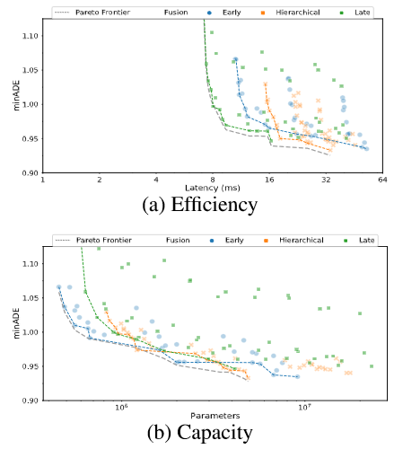
図4：多軸注意を用いた異なる融合モデルの MinADE。
図中ラベル：Pareto Frontier＝パレートフロンティア、Fusion＝融合方式、Early＝早期、Hierarchical＝階層的、Late＝後期、Latency (ms)＝レイテンシ（ms）、Parameters＝パラメータ数、(a) Efficiency＝効率、(b) Capacity＝容量
本節では、異なる融合戦略を、素の自己注意（多軸）および因子分解注意や学習されたクエリのようなより最適化された手法と組み合わせた場合のトレードオフを示す実験を提示する。アブレーション研究（5.1〜5.3 節）では、さまざまな容量（0.3M〜20M パラメータ）のモデルを WOMD で 1M ステップ学習した。現行世代の GPU での推論レイテンシ、容量、および品質の代理指標としての minADE を報告する。
これらの実験では、早期・階層的・後期融合（3.1 節）を多軸注意と組み合わせて Wayformer モデルを学習する。図（4a）では、低レイテンシ（\(x \le 16\) ms）のモデルについては、後期融合が最適な選択であることを示す。これらのモデルは、シーン符号化の段階でモダリティ間の相互作用がないため、計算コストが低い。階層的モデルにクロスモーダルエンコーダを加えると、（\(16\text{ms} \lt x \lt 32\text{ms}\)）の範囲のモデルでさらなる品質向上が得られる。最後に、より高い計算コスト（\(x \gt 32\text{ms}\)）では、早期融合が階層的融合に匹敵しうることがわかる。次に、学習可能なパラメータ数で測った容量の関数としてモデルの品質を調べる（図4b）。小さなモデルは早期融合で最も良い性能を示すが、モデル容量が増えるにつれて、融合方式の選択に対する感度は劇的に低下する。
モデルの計算量を削減するため、空間次元と時間次元に同時に注意を向ける代わりに、因子分解注意を用いてモデルを学習する。クロスモーダルエンコーダのために異なるモダリティを組み合わせる際には、まず道路グラフのモダリティを他のモダリティと共通の時間次元にタイル状に複製し、その後モダリティを空間次元に沿って連結する。シーンエンコーダの後、予測器に入力する前に、符号化を時間次元についてプーリングする。
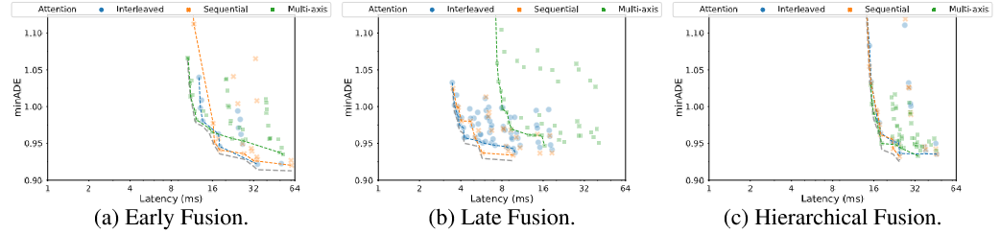
図5：因子分解注意は品質を向上させるが、高速化するのは後期融合モデルのみである。
図中ラベル：Attention＝注意方式、Interleaved＝交互、Sequential＝逐次、Multi-axis＝多軸、Latency (ms)＝レイテンシ（ms）、(a) Early Fusion＝早期融合、(b) Late Fusion＝後期融合、(c) Hierarchical Fusion＝階層的融合
2 種類の因子分解注意、すなわち逐次と交互を検討する（図5）。第一に、逐次と交互の因子分解注意は、すべての融合方式にわたって同程度の性能を示すことを観察した。第二に、早期融合と後期融合の場合に因子分解注意を適用することで品質が向上したことは驚きであった（図5a、5b）。最後に、レイテンシの改善が見られたのは後期融合モデルのみであった（図5b）。これは、早期融合と階層的融合で用いられるクロスモーダルエンコーダにおいて、道路グラフを共通の時間次元にタイル状に複製すると、トークン数が大幅に増加するためである。
この検討では、図5 に示すように（訳注：内容からみて図6 の誤りと思われる）、最初の層で入力系列長をさまざまな水準で削減した多軸潜在クエリエンコーダを用いてモデルを学習する。潜在クエリの数は Transformer ネットワークの入力サイズに対する割合として計算され、0.0% はベースラインモデル（図4 で示した、潜在クエリなしの多軸注意）を示す。
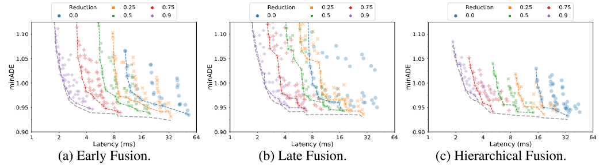
図6：潜在クエリは、品質を大きく劣化させることなくモデルのレイテンシを削減する。
図中ラベル：Reduction＝削減率、Latency (ms)＝レイテンシ（ms）、(a) Early Fusion＝早期融合、(b) Late Fusion＝後期融合、(c) Hierarchical Fusion＝階層的融合
図6 は潜在クエリを適用した結果を示している。潜在クエリは、品質の低下をほとんど、あるいはまったく伴わずに、すべての融合モデルを 2〜16 倍高速化する。早期融合と階層的融合は依然として最良の品質の結果を出しており、クロスモーダル相互作用の段階の重要性を示している。
Wayformer モデルを、動き予測の代表的なベンチマークにおいて競合モデルと比較することで、得られた知見を検証する。早期融合モデルを選ぶのは、実装の複雑さを増すことなく階層的モデルの品質に匹敵するからである。さらに、モデルの容量が増えるにつれて、融合方式の選択に対する感度は低くなる（図4b を参照）。潜在クエリを使用するのは、目立った品質低下なしにモデルを高速化するからであり、一部のモデルでは、品質をさらに向上させるため因子分解注意と組み合わせる（付録 A を参照）。さらに、リーダーボード提出で最先端（SOTA）の結果を出すための標準的な慣行であるアンサンブルを適用する。ベンチマークで報告した Wayformer モデルの完全なハイパーパラメータは付録 D に報告する。
WOMD に対するアンサンブルでは、モデルは単一の共有エンコーダを持つが、\(N = 3\) 個の別々の Transformer デコーダを使用する。アンサンブル全体の予測を統合するには、単純に各予測器のすべての混合成分を結合して合計 \(N \times 64\) 個のモードを得て、混合確率を再正規化する。その後、結合した混合分布に軌道集約手法（3.4 節）を適用し、出力モード数を所望の数 \(k = 6\) まで減らす。
表1 に、Waymo Open Motion Dataset と Argoverse データセットでの結果を示す。それぞれの評価には、各データセットで使用される標準的な評価指標を用いる（付録 E を参照）。Waymo Open Motion Dataset では、Wayformer の早期融合モデルはいずれも、すべての評価指標で他のモデルを上回る。入力モダリティの早期融合は、注意の構造（多軸注意か因子分解注意か）によらず、全体としてより良い評価指標をもたらす。
Argoverse のリーダーボードについては、それぞれ独自のエンコーダと \(N = 10\) 個の Transformer デコーダを持つ 15 個のレプリカを学習する。\(N\) 個のデコーダにわたる予測を統合するために、3.4 節の集約手法に従い、各モデルについて \(k = 6\) 個のモードを得る。次に、同じ集約手法（3.4 節）に従ってこのようなレプリカ 15 個をアンサンブルし、\(N \times 6\) 個のモードを \(k = 6\) 個に減らす。
| モデル | Waymo Open Motion Dataset | Argoverse データセット | ||||||||
|---|---|---|---|---|---|---|---|---|---|---|
| minFDE (↓) | minADE (↓) | MR (↓) | Overlap (↓) | mAP* (↑) | Brier-minFDE* (↓) | minFDE (↓) | MR (↓) | minADE (↓) | ||
| SceneTransformer ［11］ | 1.212 | 0.612 | 0.156 | 0.147 | 0.279 | 1.8868 | 1.2321 | 0.1255 | 0.8026 | |
| DenseTNT ［21］ | 1.551 | 1.039 | 0.157 | 0.178 | 0.328 | 1.9759 | 1.2858 | 0.1285 | 0.8817 | |
| MultiPath ［2］ | 2.040 | 0.880 | 0.345 | 0.166 | 0.409 | - | - | - | - | |
| MultiPath++ ［3］ | 1.158 | 0.556 | 0.134 | 0.131 | 0.409 | 1.7932 | 1.2144 | 0.1324 | 0.7897 | |
| LaneConv | - | - | - | - | - | 2.0539 | 1.3622 | 0.1600 | 0.8703 | |
| LaneRCNN ［22］ | - | - | - | - | - | 2.1470 | 1.4526 | 0.1232 | 0.9038 | |
| mmTransformer ［14］ | - | - | - | - | - | 2.0328 | 1.3383 | 0.1540 | 0.8346 | |
| TNT ［23］ | - | - | - | - | - | 2.1401 | 1.4457 | 0.1300 | 0.9400 | |
| DCMS ［24］ | - | - | - | - | - | 1.7564 | 1.1350 | 0.1094 | 0.7659 | |
| Wayformer 早期融合 | 注意方式：LQ + Multi-Axis | 1.128 | 0.545 | 0.123 | 0.127 | 0.419 | 1.7408 | 1.1615 | 0.1186 | 0.7675 |
| 注意方式：LQ + Factorized | 1.126 | 0.545 | 0.123 | 0.127 | 0.412 | 1.7451 | 1.1625 | 0.1192 | 0.7672 | |
表1：Waymo Open Motion Dataset 2021 および Argoverse 2021 における Wayformer モデルと主要な SOTA ベースライン。* はリーダーボードの順位付けに用いられる評価指標を示す。LQ は潜在クエリを表す。
動き予測アーキテクチャ： 自動運転応用への関心の高まりとベンチマーク［25, 26, 27］の利用可能性により、動き予測モデルが盛んに研究されるようになった。成功したモデル化手法は、シーンの異なる静的・動的・社会的・時間的側面を表すマルチモーダル入力を融合する。モデルの一群はコンピュータビジョンの文献に大きく依拠しており、入力を多チャネルのラスタ化されたトップダウン画像として描画する［4, 2, 28, 29, 7, 23］。この手法では、シーン要素間の関係はトップダウンの正射影平面に描画され、時空間畳み込みネットワークによってモデル化される。しかし、畳み込みの局所的な構造は画像入力の処理には適しているものの、長距離の時空間的関係を捉えるのには効果的でない。一般的な代替手法は、エンティティ中心の手法を用いることであり、そこではエージェントの状態履歴は通常、RNN［10, 30, 31, 32］や時間方向の畳み込み［33］のような系列モデル化手法によって符号化される。道路要素は、姿勢と意味情報を符号化する基本的なプリミティブ（たとえば区分線形セグメント）で近似される。エンティティ間の関係のモデル化は情報集約のプロセスとして表されることが多く、モデルはプーリング［23, 34, 31, 35, 10, 28］、ソフト注意［10, 23］、またはグラフニューラルネットワーク［36, 33, 30］を用いる。提案手法と同様に、最近のいくつかのモデルは Transformer［37］を使用している。Transformer は NLP における系列モデル化の一般的な最先端の選択肢であり［38, 39］、検出［40, 41, 42］、追跡［43］、分類［41, 44］といったコンピュータビジョンの中核的タスクでも有望な結果を示している。
反復的クロス注意 マルチモーダルデータを符号化する最近の手法は、一度に 1 つのモダリティを逐次的に処理することである［14, 19, 9］。［14］は {エージェント履歴、近傍エージェント、地図} の順でシーンを取り込む。彼らは、複数のモダリティにわたって一度に自己注意を行うことは計算コストが高いと主張している。［9］は、エージェント履歴と文脈エージェントを自己注意によって事前に符号化し、エージェントの符号化をクエリとして地図にクロス注意する。自己注意とクロス注意の順序は設計者の直感に大きく依存しており、我々の知る限り、これまでアブレーションされたことはない。
因子分解注意 高次元データを平坦化すると長い系列となり、自己注意の計算が法外に高コストになる。［16］は、計算コストを緩和するために各注意演算を単一の軸に限定することを提案し、この手法を画像の自己回帰生成モデルに適用した。同様に、［15］は自己注意ベースの分類器を構築する際に、動画入力の空間次元と時間次元を因子分解している。層をまたいで交互に適用されるこの軸ベースの注意は、Transformer ベースの動き予測モデル［9］やグラフニューラルネットワークの手法［12］で採用されている。{時間、社会／空間} の次元にわたって注意を適用する順序は、2 つの一般的なパターンで研究されてきた。(a) 時間優先［31, 35, 45］、(b) 社会／空間優先［46, 47］である。3.2 節では、「逐次」モードを検討し、［9］と同様に注意の次元を交互に切り替える交互モードと対比する。
マルチモーダル符号化 ［13］は、時間次元と空間次元に独立に注意を向けると情報の損失につながると主張した。さらに、符号化プロセスの早い段階ですべての入力が互いに自己注意できるようにすると、複雑さが減り、入力系列長の増加に伴う Transformer の計算量のスケーリングに対処するためにアーキテクチャを手作りする必要性も減る［48］。しかし、自己注意は大きな入力に対して計算コストが高いことが知られており［49］、近年、そのスケーラビリティを改善する手法に大きな関心が寄せられている。従来研究の完全な議論については、包括的なサーベイ［50］を参照されたい。有力な手法の 1 つは、学習された潜在クエリを用いて、Transformer エンコーダのクエリベクトルの数を元の入力系列長から切り離すことである［18］。これにより、Transformer の出力の解像度を入力とは無関係に任意のスケールに設定でき、モデルの計算コストを柔軟に調整できる。この手法は入力に何の構造も仮定しないため魅力的であり、マルチモーダル入力の融合に効果的であることが実証されている［48］。我々はこのようなフレームワークに着想を得て、自動運転領域における動き予測タスクに適用した場合のその利点についての検討を提示する。
本研究の範囲には次の限界がある。(1) 自己中心的なモデル化は、密なシーンでは計算の繰り返しを伴う。これは、グローバル座標系でシーンを一度だけ符号化することで緩和できる。(2) 我々のシステムの入力は世界の疎で抽象的な状態記述であり、高度に相互作用的なシーンにおけるいくつかの重要なニュアンス、たとえば歩行者からの視覚的手がかりや、車両の細粒度の輪郭や車輪角の情報を捉えられない。知覚と予測をエンドツーエンドで学習することで改善が得られる可能性がある。(3) 起こりうる未来にわたる分布をエージェントごとに独立にモデル化し、また意図が与えられたもとで各エージェントについて時間的に条件付き独立としてモデル化している。これらの単純化の仮定により効率的な計算が可能になるが、組合せ的に多数の未来を十分に記述することはできない。複数エージェントの、時間的に因果的なモデルは、相互作用的な状況でさらなる利点を示す可能性がある。
アンサンブル戦略について助力いただいた Balakrishnan Varadarajan 氏、ならびに本論文に有益なフィードバックをいただいた Dragomir Anguelov 氏と Eugene Ie 氏に感謝する。
参考文献は原文のまま掲載した。
図7a は因子分解潜在クエリ注意エンコーダブロックの実装を示し、図7b はそれらがエンコーダの構成にどのように用いられるかを示している。具体的には、因子分解注意（逐次または交互）において、図3 の最初の時間エンコーダブロックと最初の空間エンコーダブロックを、それぞれ時間潜在クエリエンコーダブロックと空間潜在クエリエンコーダブロックに置き換える。
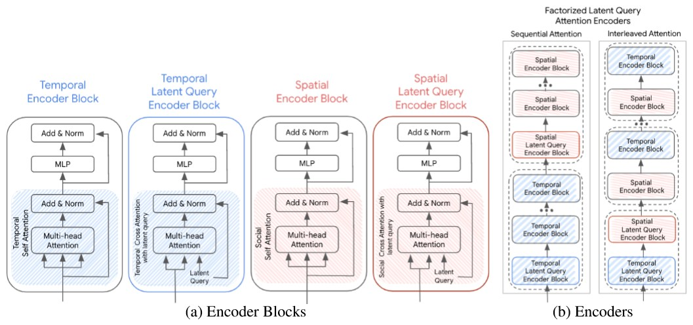
図7：Wayformer で検討したエンコーダアーキテクチャのまとめ。(a) はさまざまなエンコーダブロックの概要を示し、(b) はこれらのブロックがどのように配置されてエンコーダを構成するかを説明する。
図中ラベル：Temporal Encoder Block＝時間エンコーダブロック、Temporal Latent Query Encoder Block＝時間潜在クエリエンコーダブロック、Spatial Encoder Block＝空間エンコーダブロック、Spatial Latent Query Encoder Block＝空間潜在クエリエンコーダブロック、Add & Norm＝加算と正規化、Multi-head Attention＝マルチヘッド注意、Temporal Self Attention＝時間方向の自己注意、Temporal Cross Attention with latent query＝潜在クエリによる時間方向のクロス注意、Social Self Attention＝社会（空間）方向の自己注意、Social Cross Attention with latent query＝潜在クエリによる社会（空間）方向のクロス注意、Latent Query＝潜在クエリ、Factorized Latent Query Attention Encoders＝因子分解潜在クエリ注意エンコーダ、Sequential Attention＝逐次注意、Interleaved Attention＝交互注意、(a) Encoder Blocks＝エンコーダブロック、(b) Encoders＝エンコーダ
| ハイパーパラメータ | 値 |
|---|---|
| 隠れ層サイズ（Hidden size） | {128, 256, 512} |
| 中間サイズ（Intermediate size） | {2x, 4x} 隠れ層サイズ |
| エンコーダ層数 | [2, 16] |
| デコーダ層数 | [2, 16] |
| 潜在クエリ比率 | {0.25, 0.5, 0.75 1.0} |
| GMM モード数 | 64 |
| オプティマイザ | AdamW |
| 初期学習率 | 2e-4 |
| 学習ステップ数 | 1000000 |
| 学習率の減衰 | linear（線形） |
| バッチサイズ | 256 |
表2：WOMD で行ったすべてのアブレーション実験にわたるモデルと学習のハイパーパラメータ。（訳注：隠れ層サイズは 4.2 節では {64, 128, 256} と記されており、本表と一致しない。）
| ハイパーパラメータ | WOMD | Argoverse |
|---|---|---|
| 履歴の最大時間ステップ数（現在の時間ステップを含む） | 11 | 20 |
| 道路グラフ特徴の最大数 | 512 | 1024 |
| 文脈エージェントの最大数 | 64 | 64 |
| 信号機の最大数 | 32 | 32 |
表3：WOMD および Argoverse（訳注：原文は「Arogverse」と誤記）の入力特徴を生成するためのハイパーパラメータ。すべての実験で固定。
距離の閾値 \(D\) が与えられたとき、軌道集約手法はまず、すべての出力モードが最も近い重心から最終距離 \(D\) 以内に収まるような、最少の重心モードを選択しようとする。集約アルゴリズムは、まだカバーされていないモードのうち合計尤度を最大限にカバーする出力モードを貪欲に選択することで重心モードを反復的に選び、すべての出力モードがカバーされるまで続ける。
これらの \(k\) 個の重心モードを初期化した後、集約アルゴリズムは改良段階に進み、初期の重心モードから出発して \(k\)-means クラスタリングに類似した別の反復手続きを実行する。各反復において、各重心モードはそれに割り当てられたすべての出力モードの重み付き平均となり、その後、出力モードは新たな最も近い重心モードに再割り当てされる。
WOMD と Argoverse のベンチマーク結果に用いたハイパーパラメータを、それぞれ表4 と表5 に記す。
| ハイパーパラメータ | Multi-axis Latent Query | Factorized Latent Query |
|---|---|---|
| 隠れ層サイズ | 256 | 256 |
| 中間サイズ | 1024 | 1024 |
| エンコーダ層数 | 2 | 4 |
| デコーダ層数 | 8 | 4 |
| 潜在クエリ | 192 | 時間潜在 4 個、空間潜在 192 個（4 time latents, 192 spatial latents） |
| GMM モード数 | 64 | 64 |
| アンサンブルサイズ | 3 | 3 |
| オプティマイザ | AdamW | AdamW |
| 初期学習率 | 2e-4 | 2e-4 |
| 学習率の減衰 | linear | linear |
| 学習ステップ数 | 1200000 | 1000000 |
| バッチサイズ | 256 | 256 |
| 集約の初期距離閾値 | 2.3 | 2.3 |
| 集約の改良反復回数 | 3 | 3 |
| 集約の最大軌道数 | 6 | 6 |
表4：Waymo Open Motion 2021 Dataset でのベンチマーク実験におけるモデルと学習のハイパーパラメータ。
これらのデータセットに付随するコンペティション固有の評価指標を用いてモデルを比較する。すべての評価指標について、モデルが出力する（軌道集約後の）尤度の高い上位 \(k = 6\) 個のモードのみを考慮し、各モードの平均のみを用いる。
具体的には、使用するデータセットに基づく標準的な評価で用いられる評価手順から採った、以下の評価指標を報告する。
\(\mathbf{minDE_k^t}\)（最小距離誤差）：モデルが出力する尤度の高い上位 \(k\) 個の軌道を考慮し、時間ステップ \(t\) における真値の軌道までの最小距離を計算する。
\(\mathbf{MR^t}\)（ミス率）：各予測軌道について、時刻 \(t\) において予測対象エージェントの真値の軌道に十分近いかどうかを計算する。ミス率は、予測軌道のいずれも真値に十分近くない予測対象エージェントの割合である。軌道が十分に近いとどのように判定するかの詳細は、WOMD の評価指標の定義［27］に譲る。
\(\mathbf{minADE_k}\)（最小平均距離誤差）：\(minDE_k^t\) と同様であるが、距離はすべての時間ステップにわたる平均として計算される。
\(\mathbf{mAP}\)：予測軌道の各集合について、陽性は高々 1 つである。すなわち、真値に最も近く、かつ真値から距離 \(\tau\) 以内にあるものである。その他の予測軌道はミスとして報告される。これから、さまざまな閾値における適合率と再現率を計算できる。WOMD の評価指標の定義［27］に従い、エージェントの将来軌道は行動バケットに分割され、エージェントごとにありうる真陽性と偽陽性を用いて適合率-再現率曲線の下の面積を計算し、行動バケットごとの平均適合率（Average Precision）を得る。全体の mAP の値は、各行動バケットの AP の平均である。
| ハイパーパラメータ | Multi-axis Latent Query | Factorized Latent Query |
|---|---|---|
| エンコーダの隠れ層サイズ | 128 | 256 |
| エンコーダの中間サイズ | 512 | 1536 |
| デコーダの隠れ層サイズ | 128 | 128 |
| デコーダの中間サイズ | 512 | 768 |
| エンコーダ層数 | 4 | 4 |
| デコーダ層数 | 6 | 6 |
| 潜在クエリ | 1024 | 時間潜在 6 個、空間潜在 192 個（6 time latents, 192 spatial latents） |
| GMM モード数 | 6 | 6 |
| アンサンブルサイズ | 10 | 10 |
| オプティマイザ | AdamW | AdamW |
| 初期学習率 | 2e-4 | 2e-4 |
| 学習率の減衰 | linear | linear |
| 学習ステップ数 | 1000000 | 1000000 |
| バッチサイズ | 4 | 4 |
| 集約の初期距離閾値 | 2.9 | 2.9 |
| 集約の改良反復回数 | 5 | 5 |
| 集約の最大軌道数 | 6 | 6 |
表5：Argoverse 2021 Dataset でのベンチマーク実験におけるモデルと学習のハイパーパラメータ。
\(\mathbf{Overlap^t}\)：最も尤度の高い軌道予測の時間ステップのうち、予測が他のエージェントの対応する時間ステップの実際の将来軌道と重なる時間ステップの割合。
\(\mathbf{minFDE}\)（最小最終変位誤差）：最良の予測軌道の終点と真値との間の L2 距離。
\(\mathbf{brier-minFDE}\)：minFDE と Brier スコア \((1-p)^2\) の和として定義される。ここで \(p\) は最良の予測軌道の確率である。
本節では、WOMD のシーンにおける Wayformer（WF）の予測例を、MultiPath++（MP++）モデル［3］と比較して示す。以下のすべての例において、(a) 色相は時間ホライズン（0 秒〜8 秒）を示し、透明度は確率を示す。(b) 長方形は車両を示し、正方形は歩行者または自転車を示す。
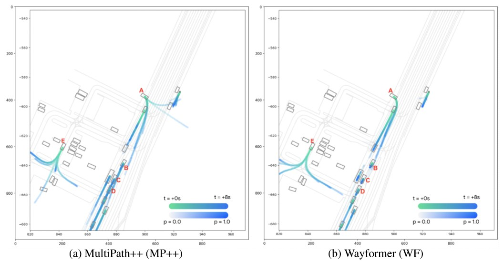
図8：このシナリオは、左側に駐車場がある多車線道路を表している。ここでは、いくつかの車両に対する WF の予測が、MP++ よりも安全で道路に沿ったものであることがわかる。例：(a) 車両 A は駐車場から出て道路に合流しようとしている。MP++ の予測は完全に道路外にあるのに対し、WF の予測は道路のルールに従っている。(b) MP++ では車両 B、C、D の予測が互いに重なり合い、互いの衝突を予測している。しかし WF は、D が前方の車両に道を譲り、C が D に、B が C に道を譲ることを正しく予測している。(c) 駐車場内を走行する車両 E に対する MP++ の予測は、すでに駐車している車両を通り抜けているのに対し、WF は相互作用をよりよく理解し、衝突しない予測を生成している。
図中ラベル：(a) MultiPath++ (MP++)、(b) Wayformer (WF)、t = +0s〜t = +8s＝時間ホライズン（色相）、p = 0.0〜p = 1.0＝確率（透明度）、A〜E＝エージェント
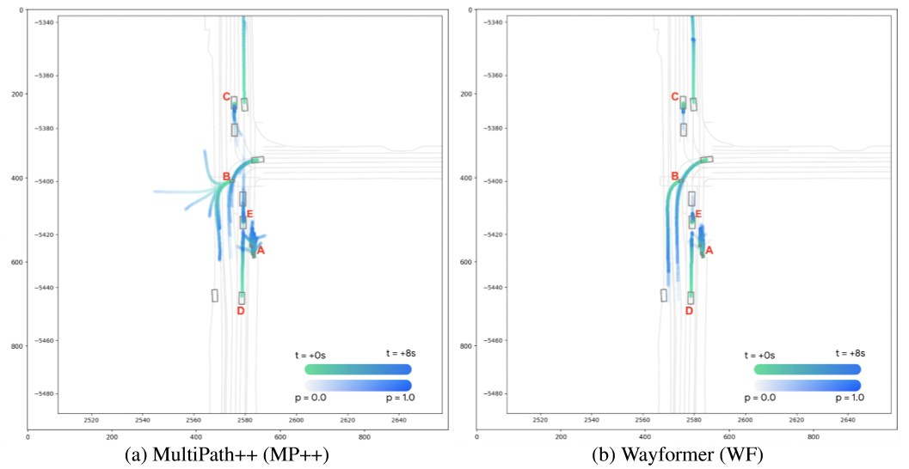
図9：このシナリオは T 字路を表している。ここでは (a) 左折しようとしている自転車 B が見られる。MP++ の予測は道路外にあり、利用可能な道路を越えて進んでいる。しかし WF の予測は道路のルールに従い、左折という同じ行動に対して複数の速度プロファイルを提示している。(b) 歩行者（歩行者 A）についても、より良い予測が見られる。MP++ はこの歩行者が対向車のある車道に歩み出ると予測している。しかし WF の予測は歩道に制約されている。(c) さらに、MP++ と比較して、WF が車両 C、D、E について安全な未来を予測していることにも気づく。
図中ラベル：図8 と同じ（t＝時間ホライズン、p＝確率、A〜E＝エージェント）
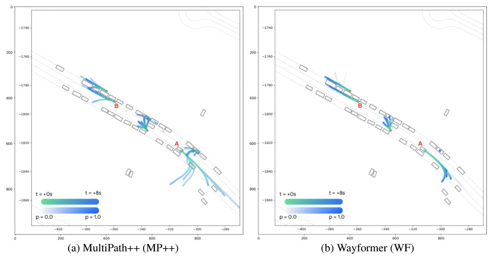
図10：このシナリオは、駐車施設に曲がって入る車両（エージェント A）を表している。MP++ の予測は他の駐車車両の存在を軽視しており、一部の予測は駐車中のエージェントを通り抜けている。WF はこれらの相互作用をよりよくモデル化し、他の駐車中の物体と衝突しない軌道のみを予測している。
図中ラベル：図8 と同じ（t＝時間ホライズン、p＝確率、A・B＝エージェント）
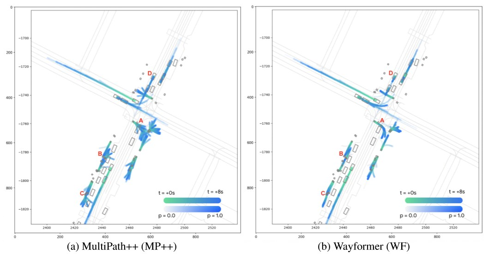
図11：このシナリオは、交通量の多い四差路交差点を表している。まず、歩行者の軌道予測における WF の改善について述べる。MP++ は歩行者（A）が対向車両に突っ込んでいくと予測しており、この空間的相互作用をモデル化できていないことを示している。WF は、同じ歩行者がこの停止車両の前を横切り、道路の反対側の横断歩道（訳注：原文は「corsswalk」と誤記）を歩き続ける様子を示している。画像の左下隅の歩行者（エージェント B と C）も同様の振る舞いを示す。MP++ は、彼らがすぐ隣に駐車している車にぶつかり、対向車に向かって車道上に歩み出ると予測している。一方 WF は、これらの歩行者について、道路に沿った良好で一貫した軌道を予測している。次に、このシーンの車両（エージェント D）に対する予測を見る。MP++ は、この車両の軌道が前方の静止した車と、その車の前を通過する歩行者の両方に衝突すると予測している。WF はこれらすべての空間的相互作用をうまくモデル化し、この車が前方の車の後ろで待ち、前方を横断する歩行者に割り込まない軌道を予測している。
図中ラベル：図8 と同じ（t＝時間ホライズン、p＝確率、A〜D＝エージェント）
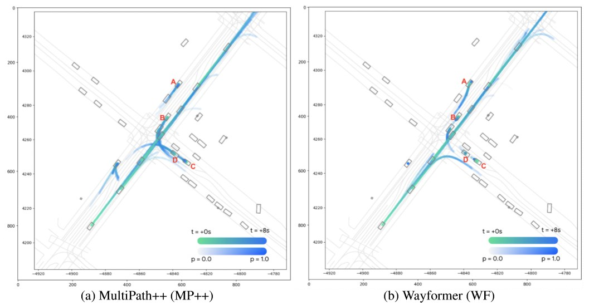
図12：このシナリオは、多くの車が通過する複雑な（訳注：原文は「comlpex」と誤記）四差路交差点を表している。図11 と同様に、MP++ はシーン内の車両（エージェント A、B、C、D）の軌道が前方の車と衝突すると予測していることがわかる。WF は非常に洗練された振る舞いを示す。エージェント A については、A の前に駐車している車が二重駐車車両であり、その横の道路に空間があることを推定でき、その車をよけて回り込む軌道を予測している。B、C、D については、道路のルールを注意深くモデル化し、対向車（エージェント B の場合）または交差交通（エージェント C と D の場合）を優先させ、それらに道を譲る軌道を予測している。
図中ラベル：図8 と同じ（t＝時間ホライズン、p＝確率、A〜D＝エージェント）
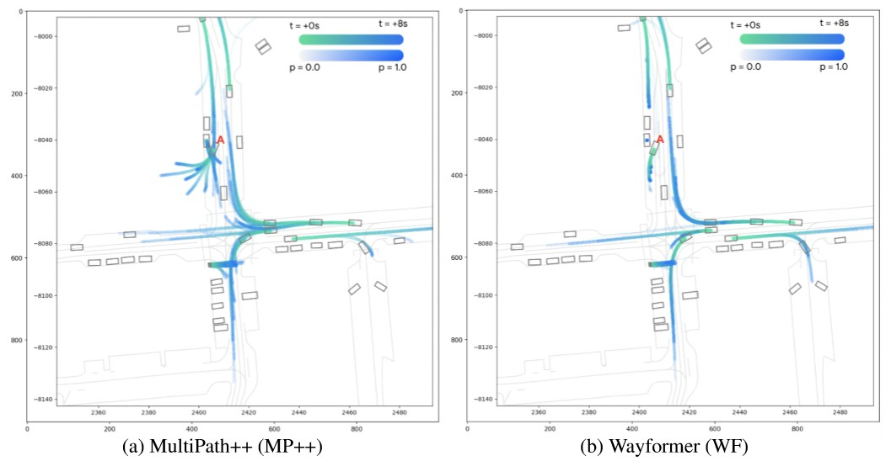
図13：このシナリオでは、MP++ は駐車レーンに入る車両（エージェント A）の未来をモデル化できず、このエージェントについて等しく尤もらしいマルチモーダルな未来を出力していることがわかる。WF は道路グラフとの相互作用をはるかによく理解し、エージェント A が駐車レーンに入ることについて高い尤度を持つ軌道を出力している。
図中ラベル：図8 と同じ（t＝時間ホライズン、p＝確率、A＝エージェント）
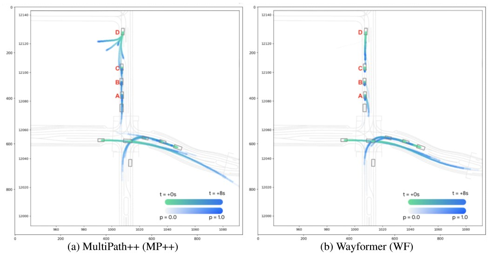
図14：エージェント A、B、C が静止車両の後ろで待っている様子が見られる。WF は、エージェント A が前進するために静止車両をよけて回り込むと予測するのに対し、MP はエージェントが静止車両を通り抜けて進むと予測している。さらに、MP はエージェント D が道路外に進む可能性があると予測するのに対し、WF はエージェント C の後ろで道路に沿って進むと予測している。
図中ラベル：(a) MultiPath++ (MP++)、(b) Wayformer (WF)、t = +0s〜t = +8s＝時間ホライズン（色相）、p = 0.0〜p = 1.0＝確率（透明度）、A〜D＝エージェント
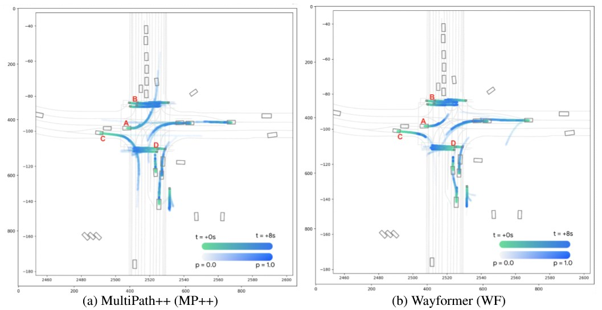
図15：エージェント B を含む複数の歩行者が道路を横断しており、MP++ と WF はいずれも、車 A がその横断歩道を通って左折しようとしていると予測している。WF は、車 A が曲がり始め、その後歩行者が横断する間は待つと予測するのに対し、MP++ は歩行者が横断している最中でも車 A が横断歩道を通過して進むと予測している。
図中ラベル：図14 と同じ（t＝時間ホライズン、p＝確率、A〜D＝エージェント）
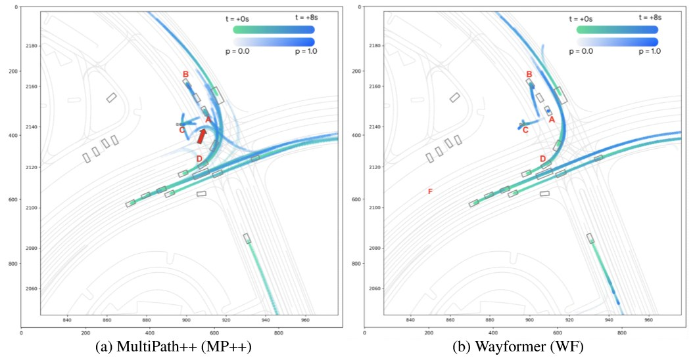
図16：これは交通量の多い交差点を示しており、WF と MP++ はいずれも、左右方向の道路の車両（すなわちエージェント D）が直進または左折すると予測している。しかし、MP++ はエージェント A が、左折中の他の車を通り抜けることも含め、交通の流れに直接割り込んで左折しようとすると予測するのに対し、WF はエージェント A が待つと予測している。さらに、MP++ はエージェント B が前方で待っている車両を通り抜けて進もうとすると予測するのに対し、WF は代わりに、静止したままでいるか隣の車線へ寄せると予測している。さらに、WF はエージェント D が、エージェント C 付近の歩道の角を通り抜ける U ターンをする可能性も予測している（赤い矢印で強調）（訳注：赤い矢印は (a) MP++ 側の図に描かれている）。
図中ラベル：図14 と同じ（t＝時間ホライズン、p＝確率、A〜F＝エージェント）
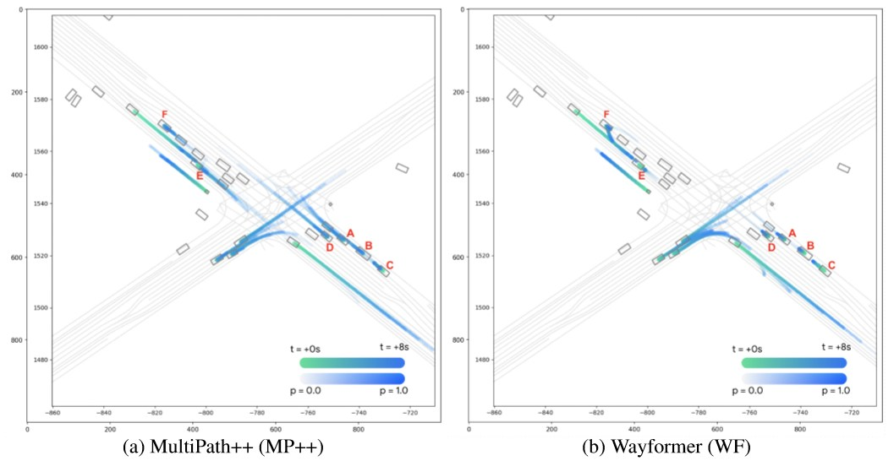
図17：このシナリオは四差路交差点を表している。(a) 交差点では、車両 A、B、C、D はすべて信号により交差点で停止している。WF はこれを考慮し、道を譲る振る舞いを予測している。車両 D は信号のために停止し、車両 C は B に、車両 B は A に、車両 A は前方の車両に道を譲る。しかし、同じエージェントに対する MP++ の予測は交差点を通過し（車両 D）、車両 A、B、C については前方の車両を通り抜けている。(b) 交差点の反対側でも同様の振る舞いが見られ、車両 E に対する WF の予測は道を譲るものであり、MP++ の予測は前方の車両を通り抜けている。
図中ラベル：図14 と同じ（t＝時間ホライズン、p＝確率、A〜F＝エージェント）
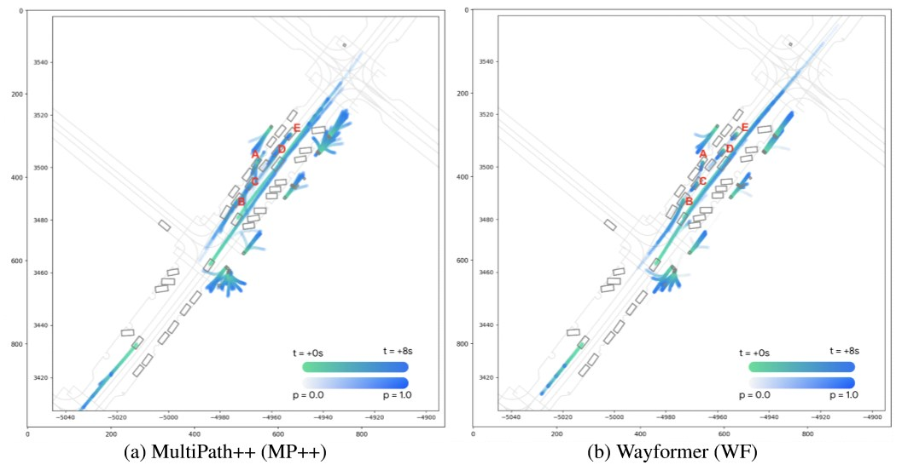
図18：このシナリオは、狭い道路と駐車車両のある T 字路を表している。この相互作用の多いシーンでは、(a) 駐車車両（車両 A）が交通の流れに合流しようとしていることが観察される。WF はすでに駐車している車をよけて回り込み、交通の流れに合流することを予測するのに対し、MP++ の予測は A の前方の駐車車両を通り抜けている。(b) さらに、車両 B について、WF は前方の車両をよけて回り込む予測をするのに対し、MP++ の予測は前方の車を通り抜けていることもわかる。(c) 車両 C、D、E について、WF は道を譲る振る舞い（C は B に、D は前方の車に、E は D に道を譲る）を予測するのに対し、MP++ の予測は前方の車両を通り抜けている。
図中ラベル：図14 と同じ（t＝時間ホライズン、p＝確率、A〜E＝エージェント）
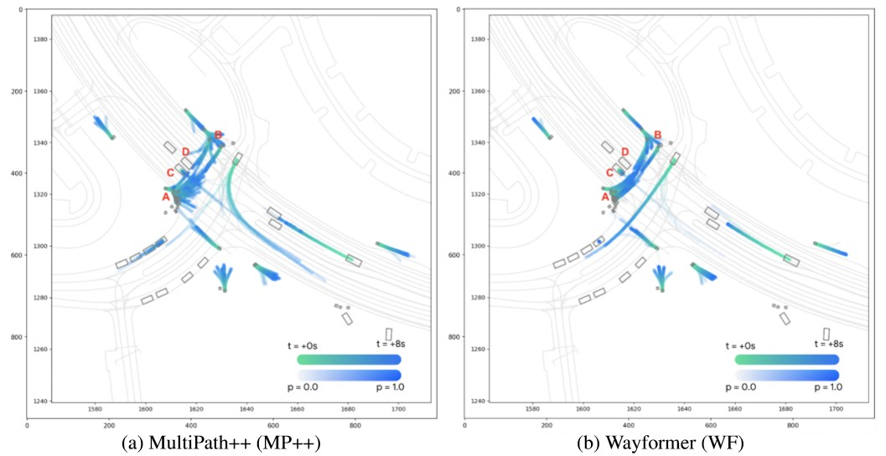
図19：このシナリオは、歩行者の集団（A、B）がいる非常に交通量の多い四差路交差点を表している。これらの集団はいずれも、道路の両側から信号を渡っている歩行者である。MP++ の予測はより分散しており、その一部は交差点ですでに停止している車両（車両 C と D）を通り抜けていることが観察される。しかし WF は他の車両の存在を理解し、それらを横切らない予測を生成している。また、車両 C に対する WF の予測は歩行者に道を譲っているのに対し、MP++ の予測はそうなっていないこともわかる。
図中ラベル：図14 と同じ（t＝時間ホライズン、p＝確率、A〜D＝エージェント）